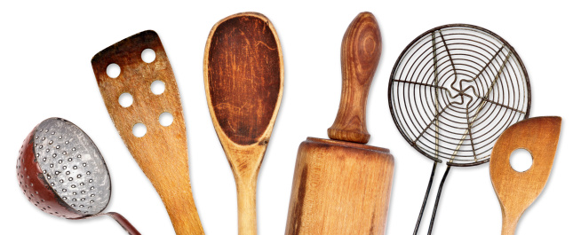
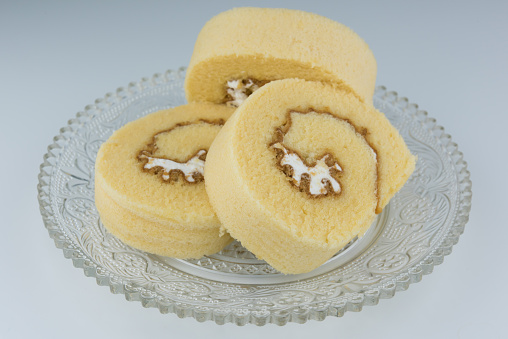

05/21/15: Cooking Tools

Take good care of your spatulas and other cooking tools! (Tip: go with metal or wood accessories (ceramic knives maybe?) and replace them whenever the food starts to stick)
05/20/15: Vanilla Cream Rolls

Here's a little taste of my latest baked goods. I kind of winged it on this one, but my family will stick up for me, when it comes to taste.
When I was young, my grandma once said, Bake it till you make it.
Actually, she didn't really say that, but it became my lifelong motto. (She had other sayings about food and baking that I may include in a later blog post.)
05/19/15: The Ol' Recipe Book

After I fill it up with my various recipes, then I should make sure to add one of my grandma's old favorites. Her recipes are delicious, and she taught me everything I know. Grandma if your reading this please let me know what new recipes come to mind.
My Go-To Snacks
These are my top favorites. Let me warn you, I do have some unhealthy treats listed here, but just don't overindulge, ok?
 500 cal
500 cal12g sugar
 120 cal
120 cal5g sugar
Baker's Poll
What is the most important step toward successful cooking?
Tried and true recipes ( votes)
Quality Ingredients (185 votes)
Time and Patience (168 votes)
Previous Poll Results
Are there alot of bakers in your family?
I come from a long line of bakers
some distant relatives here or there...
I don't have an ounce of baking in my blood.
Featured Recipe
These basic cupcake instructions may seem relatively easy for novice bakers, but once you do actually start preparing it for the first time it's easier said than done. Keep trying, and use other cookbooks as a reference and for more specific quantities to use and other types of ingredients.
Once you think you have mastered the basic technique, feel free to add your own twist.
- Gather some eggs, milk, flour from your fridge, and let them cool down a bit (preferably room temperature).
- Note: If you are having some guests over, it's riskier to go with the cheap low-quality ingredients, even if you save a buck in the end. If you do, you better pray that they don't taste the difference.
- Dump out the ingredients in a bowl, break out the batter and mix them up until they get nice and soft, but don't overdo it!
- Get out your own muffin pan, and evenly pour out the bowl into each slot
- Stick the tray in the oven and wait...
- If you expect the worst, it wouldn't hurt to run to the store and buy some well-made cupcakes. Trust me, you'll have time.
- Take out the tray. If you did this correctly you should have some tasty cupcakes waiting to be eaten. The hard part may be over, but that doesn't mean we're done yet...
- Now comes the fun or funner part, decorating! All you need is some icing, sprinkes and your imagination!